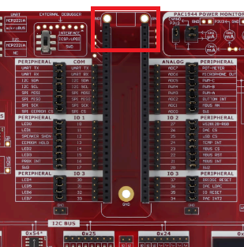
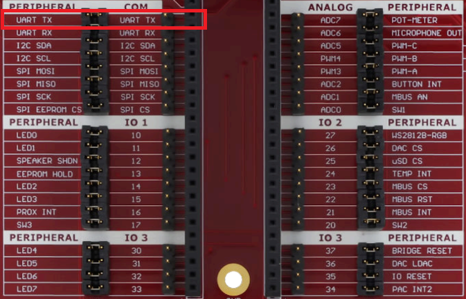

Getting Started
Required Materials
This lab requires the following materials:
- A computer with Arduino IDE installed (with DXCore libraries)
- AVR64DD32 Curiosity Nano
- EV58G97A Curiosity Explorer Board
- Standard USB to Micro USB cable
Learning Objective
This lab will introduce you to the Curiosity Nano Explorer board, starting with an in-depth look at three essential components:
- The Amber LEDs (MCP23008).
- The Digital Addressable LEDs (WS2812 RGB).
- The OLED Display (SSD1306).
Intro to Curiosity Nano Explorer Board
The Curiosity Nano Explorer Board is a versatile development platform designed for rapid prototyping and learning. It supports all Curiosity Nano boards and features a variety of onboard components, making it easier for users to learn how to control microcontrollers and interface them with sensors, peripherals, and output devices. This board is ideal for students, hobbyists, and developers seeking hands-on experience in embedded systems and IoT applications. The Explorer Board offers the following key features:
- Remappable Pinout:
- Allows flexible configuration of pin assignments to adapt to various project requirements.
- On-Board Peripherals:
- Communication: USB-to-UART/I2C bridge and I2C I/O expanders for reliable data transmission.
- Power Management: Includes a power monitor, voltage references, and power switches to manage and monitor power usage efficiently.
- Sensors: Features a temperature sensor, microphone, touch controller, and light sensor for environmental data collection and interaction.
- Output Devices:
- Equipped with LEDs, an OLED display, a speaker, digital-to-analog converters, and servo motor drivers, allowing users to create interactive outputs.
- Connectivity Options:
- Offers Grove I2C, mikroBUS, Qwiic I2C connectors, and a MicroSD card slot, providing flexibility in connectivity for external devices and modules.
- Power Supply:
- Powered via an onboard USB Type-C connector, with external power options and various power management ICs to support diverse power requirements. In this lab, we will explore the setup of the Explorer Board and learn how to use I2C to control LEDs, digitally addressable LEDs, and an LCD screen, building a foundation for understanding microcontroller-based systems.
Setting Up and Working with the Explorer Board
Setting up your Curiosity Nano Explorer Board is a straightforward process.
- Installing the Curiosity Nano:
- Align the Boards: Place your Curiosity Nano board at the top of the Explorer Board, ensuring the USB connector faces the top edge.
- Align the Pins: Align the pins of the Curiosity Nano with the topmost female header pins on the Explorer Board.
- Secure the Connection: Gently push the Curiosity Nano onto the header pins to establish a secure connection. 
- Understanding the Pin Connections:
- Peripheral Connections: The Explorer Board connects the Curiosity Nano's pins to various peripherals. Refer to the markings on either side of the female header pins to identify these connections.
- Pin Jumpers: The pin jumpers link peripherals to the Curiosity Nano. 
- Remapping Pins:
- If you need to use a peripheral that doesn't have a direct connection to your Curiosity Nano, you can remap pins.:
- Disconnect the Jumper: Remove the pin jumper from the peripheral you want to remap.
- Connect the Wire: Use a jumper wire to connect the desired pin on the Curiosity Nano to the corresponding pin on the peripheral.
Serial Communication - I2C
The Explorer features an I2C bus with several attached devices and external connectivity options. All connected devices are compatible with Standard Mode (100 kHz) and Fast Mode (400 kHz) I2C. The bus is designed to meet the rise-time requirements for both modes. The SDA and SCL signals are connected to the COM section of the CNANO socket. Two components in this lab can be controlled via the I2C Bus.
- The Amber LED Row can be controlled from the I/O Expander 1 via the I2C Bus.
- The OLED Display is directly connected to the I2C Bus.